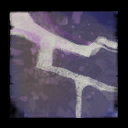
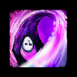
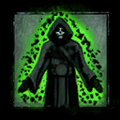

Elementalists are great farming classes, but require a more of a learning curve compared to other classes. The class is very rewarding the more you master it. All builds can be extremely squishy, but pack a punch with great area coverage. In terms of farming, I'll try to keep it simple as possible!
Builds
1) Fresh Air Tempest
Gear stat: Berserker, Assassins, or Marauder
Weapons (in preferred combination): Dagger/Warhorn, Dagger/Dagger, Dagger/Focus, Staff, Scepter/Anything
Traits:
Difficulty:
About: The main focus of this build is the trait, Fresh Air. As long as you crit outside of  Air Attunement, you will instantly refresh it! In combination with the trait, Transcendent Tempest, your Overload Air will be in reduced cooldown.
Any weapon can be used for this build! I prefer to use Dagger mainhand for the quick ability to attack and tag mobs around me with Warhorn bringing more damage over time skills. Focus works great for survivability/utility. Staff is a great range/melee option, but can be slow in it's attacks. Scepter is somewhat single target, but requires more focus on specific targets to be able to hit more than 1 at a time.
Simple Rotation
1. Start in Air Attunement
2. Overload Air
3. Switch to any other attunement (preferrably  Fire for easy damage)
Fire for easy damage)
4. Any skill, including auto attacks, to crit to refresh Air Attunement
5. Repeat 1-5
Great skills
Greatsword
Overload Air (duh :P) - Large pulsing AoE, but only striking up to 3 targets at a time
Lightning Whip - Quick air auto attack hitting foes in front of you
Convergence - Large, quick AoE surrounding you. Foes hit will grant  Fury
Fury
 Drake's Breath - Hits foes in front of you and can easily move around to hit more
Drake's Breath - Hits foes in front of you and can easily move around to hit more
 Dragon's Claw - Quick fire auto attack hitting foes in front of you and pierces
Dragon's Claw - Quick fire auto attack hitting foes in front of you and pierces
Burning Speed - Mobility, large AoE on impact
Ride the Lightning - Mobility
Updraft - CC
Shocking Aura → Transmute Lightning - CC
Mesmers can be one of the best tagging classes in the game, but lack in pure damage (unless swapped to an actual DPS build, of course). Below are some great options for tagging that include having massive range and mobility.
Builds
1) Lazer Lightshow Mirage
Gear stat: Berserker, Assassins, or Marauder
Weapons (in preferred combination): Greatsword & Sword/Focus
Traits:
Difficulty:
About: The main focus of this build is the minor trait, Mirage Cloak. This allows all auto attacks to change functionality for the next attack after a dodge. For Greatsword, it allows the player to shoot multiple foes with lazer beams (pierces). In conjunction with the trait, Infinite Horizon, all clones will also do a lazer beam to foes around them.
Sword/Focus is mainly used to give NPCs swiftness to move faster or to pull enemies in a central location, both by using the skill, Temporal Curtain.
Simple Rotation
1. Start on Greatsword
2. Mirror Blade
3. Jaunt or Phantasmal Berserker
4. Dodge ( Mirage Cloak)
5. Auto Attack
6. Repeat 4-5 or Repeat 1-6 for new targets/lost clones
Great skills
Greatsword
Auto attack - Pierces, 1200 range. Your ultimate tagging ability, esp after dodging
Mirror Blade - Bounces and summons a clone
Mind Stab - Quick AoE and 1 boon rip
Phantasmal Berserker - Dash attack on a selected target to hit multiple foes, good damage, and summons a clone at the end
 Illusionary Wave - CC, knockback
Illusionary Wave - CC, knockback
Sword/Focus
Auto attack - When dodged, the next attack leaps you. Good mobility
Blurred Frenzy - 1 sec evade, good damage
 Illusionary Leap - Summons 1 clone, use it again to swap positions from you to your new clone
Illusionary Leap - Summons 1 clone, use it again to swap positions from you to your new clone
Temporal Curtain - Area swiftness for anyone who passes through, including most NPCs. Use it again to pull foes into the center of the AoE
Phantasmal Warden - Good damage, summons 1 clone afterwards
Utility
Signet of the Ether (heal) - Use again to refresh Phantasmal skills
Mantra of Pain → Power Spike - Instant AoE damage around a foe. Great to quickly hit something out of sight
 Blink - Breakstun, great mobility
Signet of Inspiration - Swiftness uptime
Jaunt - Small teleport. Use in conjuction with the trait, Self Deception, to summon a clone instantly
Necros are high in survivability by default. These builds are all about large coverage with at least some damage packed into them.
Builds
1)
Gear stat: Berserker, Assassins, or Marauder
Weapons (in preferred combination): Staff and Dagger/Warhorn
Traits:
Difficulty:
About: The main focus of this build is the major trait,  Sand Savant. This allows the player to use only 1 shade at a time, but the shade is much large and can hit up to 5 targets. This increase does apply to the player too. With good positioning, the shade and the player could hit up to 10 targets, covering a massive area of mobs.
Sand Savant. This allows the player to use only 1 shade at a time, but the shade is much large and can hit up to 5 targets. This increase does apply to the player too. With good positioning, the shade and the player could hit up to 10 targets, covering a massive area of mobs.
Staff is used for more long-range AoE tagging and Dagger/Focus is used for damage/quick life force.
Simple Rotation
1. Drop your  shade to your desire location
shade to your desire location
2. Desert Shroud
3. Anything else. Repeat 1 if there's a new location of mobs
Great skills
Staff - All can produce life generation thanks to the trait, Soul Marks
Auto attack - Pierces, 1200 range, life generation
Mark of Blood - Low cooldown AoE
Chillblains - AoE  chill
chill
Putrid Mark - Stronger AoE damage
 Reaper's Mark - AoE
Reaper's Mark - AoE  fear
fear
Dagger/Warhorn
Auto attack - Damage, life force generation
Wail of Doom - CC
 Locus Swarm - Quickly generate life force from foes around you
Utility
 Well of Darkness - Damage,
Well of Darkness - Damage,  blind, pulsing AoE
blind, pulsing AoE
Trail of Anguish - 10-man  Swiftness in a trail behind the caster
Swiftness in a trail behind the caster
Signet of the Locust - Perma 25% movement speed
Flesh Golem - Large CC
Other Utilities
 Well of Darkness - Damage,
Well of Darkness - Damage,  blind, pulsing AoE
blind, pulsing AoE
Spectral Grasp - Large AoE pull
Engies are extremely versitile, yet simple at the same time when it comes to farming. These builds are ones I personally use frequently because Flamethrower is one of the best tagging skills.
Builds
1) Hammer Scrapper
Gear stat: Berserker
Weapons (in preferred combination): Hammer
Traits:
Difficulty:
About: The main focus of this build is the ability to use Flamethrower for the easiest of tagging, but also to be able to pull great DPS on bosses. I rate the difficulty with 3 bars because, while Flamethrower is a brain-dead way of tagging, getting good DPS on this build isn't easy for an average farmer. Below is a video on the rotation (made by Crone) of how to get great DPS. Switch out Flamethrower for Genades.
Simple Rotation
1. Drop your
2. Desert Shroud
3. Anything else. Repeat 1 if there's a new location of mobs
Great skills
Staff - All can produce life generation thanks to the trait, Soul Marks
Auto attack - Pierces, 1200 range, life generation
Mark of Blood - Low cooldown AoE
Chillblains - AoE
Putrid Mark - Stronger AoE damage
Dagger/Warhorn
Auto attack - Damage, life force generation
Wail of Doom - CC
Locus Swarm - Quickly generate life force from foes around you
Utility
Trail of Anguish - 10-man
Signet of the Locust - Perma 25% movement speed
Flesh Golem - Large CC
Other Utilities
Spectral Grasp - Large AoE pull